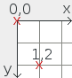
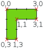

Create your own level
Own puzzle levels can be created as a text file stored with .conf file extension. Afterwards they can be loaded via 'Game → Choose new game → Open own board…' . Feel free to submit a pull request on Codeberg and your level could be included in the next release!
For example, the following parts belong to the pento_T.conf level:
[General]
GridSize=25
BGColor="#EEEEEE"
PossibleSolutions=106
NotAllPiecesNeeded=true
Freestyle=false
[Board]
Polygon="0,0 | 9,0 | 9,9 | 0,9 | 0,0"
Color="#FFFFFF"
BorderColor="#2E3436"
GridColor="#888A85"
## X X X X
## X
[Block1]
Polygon="0,0 | 4,0 | 4,1 | 1,1 | 1,2 | 0,2 | 0,0"
Color="#3465A4"
BorderColor="#000000"
StartPos="-3,-5"
[Block2]
...
[Barrier1]
Polygon="0,0 | 3,0 | 3,6 | 0,6 | 0,0"
Color="#000000"
BorderColor="#000000"
StartPos="0,3"
[Barrier2]
...Explanation of the different sections of the file:
| [General] | |
|---|---|
| GridSize |
Decimal scale factor (default:
25). This parameter defines
the size of a board field in pixels.
|
| BGColor |
Background color around the board as hex
value (default: "#EEEEEE")
|
| PossibleSolutions | Optional, if known: Number of possible solutions |
| NotAllPiecesNeeded |
Optional, true or
false, depending if all
pieces are needed for the solution or
not (default: false)
|
| Freestyle |
Optional, true or
false. Dis-/enable free
puzzling mode - neither counting moves
nor checking if puzzle is solved
(default: false)
|
| [Board] | |
|---|---|
| Polygon | Board definition as polygon (more information see below). The board has to be rectangular! |
| Color | Background color of the board as hex value |
| BorderColor | Border color of the board as hex value |
| GridColor | Color of the board grid as hex value |
Puzzle pieces / barriers numbered from 1 to N:
| [BlockN] / [BarrierN] | |
|---|---|
| Polygon |
Shape of a puzzle piece/barrier as
orthogonal polygon; e.g.:
“0,0 | 3,0 | 3,1 | 1,1 | 1,3 | 0,3
| 0,0”
|
| Color | Color of piece/barrier as hex value |
| BorderColor | Border color as hex value |
| StartPos |
Position “x, y” at game
start (see below information about the
coordinate system). Reference point is the top left
corner of the piece.
|
| Comments | |
|---|---|
| ## Comment | If needed, comments can be inserted with leading ## |
Coordinate system
The top left corner of the board defines the origin of
the coordinate system used. Points are defined as
“x, y” (the x-axis is horizontal to the
right and the y-axis is vertical downwards). Negative
values can be used for the start positions of the
pieces.

Polygon
The board, pieces and barriers are all defined as
(orthogonal) polygons. The shape is defined by a list
of all the corners. Care must be taken to ensure that
the polygon is 'closed', meaning that the first and
last corners must be identical. The coordinates are
separated by a vertical bar | (the “pipe” character,
accessible via the Shift + \ key
combination on an English keyboard), and the
complete list is terminated by quotation marks. For
example, the list
“0,0 | 3,0 | 3,1 | 1,1 | 1,3 | 0,3 | 0,0”
is shown in the picture below.
